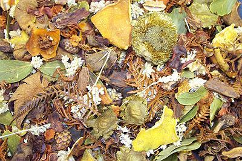

Harvest Day Party
Our annual Harvest Day party and chili cook off is 6pm, Friday, October 31.
Instead of celebrating Halloween and some of its darker themes, we like to celebrate Harvest Day.
Harvest Day is a family time when we gather for food and fellowship.
Costumes are encouraged, but we do ask that they be kept family friendly.
We also like to have a "Trunk or Treat."
We decorate our car trunks (or hatches) and provide a time for our children to walk around, enjoy the decorations and gather candy.
For food we have a chili cookoff.
All are invited to bring their best chili for the contest.
Some also like to bring cornbread or other side dishes.